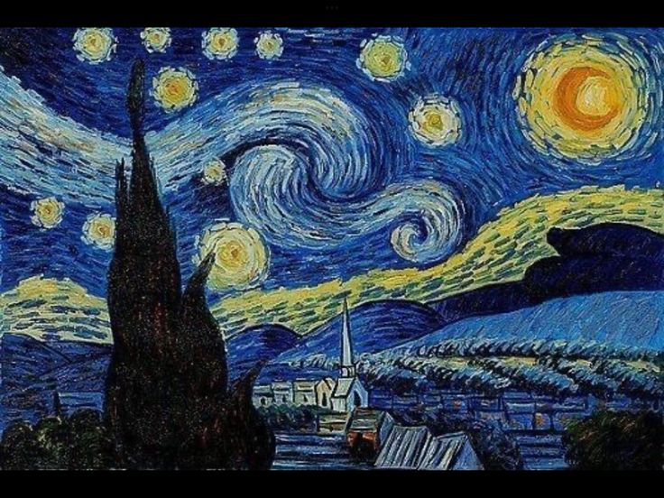

How did paint?
Each painting in the exhibition reflects a unique feeling and its own story;
it is not merely a difference in materials or colors, but rather an artistic journey
pulsating with the emotions and personal experiences that the artist carried while creating it.

Starry Night
The painting 'The Starry Night' by Van Gogh is a brilliant example of his creative use of oil paints on canvas, employing the thick brushstroke technique known as Impasto. He applied the paint in bold, swirling strokes, allowing the sky to pulse with movement and energy, while the twinkling stars and swirling patterns seem to dance above the quiet village. This technique not only creates a visually striking scene but also conveys the artist’s deep inner emotions—each brushstroke reflecting Van Gogh’s feelings of anxiety, hope, and beauty—inviting the viewer to experience the moment with all its artistic and emotional depth.